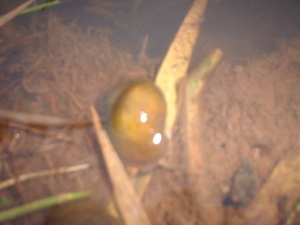

pungguk 
/puŋguk/
n.
a generic name of all types of snails
Ka pungguk diyè eg-ubpè te me lanew wey due isip ku ne egpamurut te pungguk su egkeenan ku ke egkeen ki te pungguk egsupsuppan te eyew egkaangey ta ka tahù.
The pungguk snail ?? out in the lakes and I think I will ? some pungguk snails to eat, for us to eat and we will chew the pungguk snails too ??? what is inside.
Cult. 0.5' diameter round shell
Eng. snail; snail
OCM: Fauna (136)
DDP: Spider (1.6.1.8)
Online dict status: -
Usage level: RT
Updated by: RJH,QDL,NJK,QDL
Last updated: 13/Oct/2009
This page last updated: 19/May/2012
Copyright © 2009-2010, Matigsalug Language Christian Association, Inc